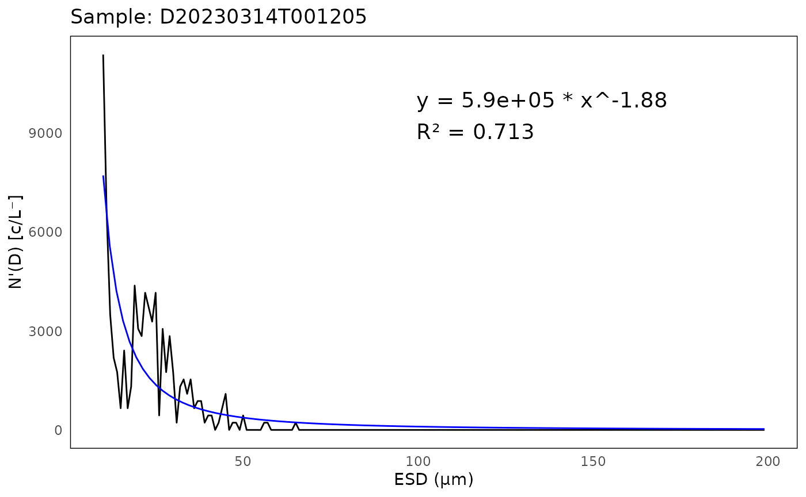

iRfcb Tutorial
tutorial.RmdGetting Started
Installation
You can install the package from GitHub using the
devtools package:
# install.packages("devtools")
devtools::install_github("EuropeanIFCBGroup/iRfcb",
dependencies = TRUE)Some functions in iRfcb require Python to
be installed (see in the sections below). You can download
Python from the official website: python.org/downloads.
Load the iRfcb library:
Download Sample Data
To get started, download sample data from the SMHI IFCB Plankton Image Reference Library (Torstensson et al. 2024) with the following function:
# Define data directory
data_dir <- "data"
# Download and extract test data in the data folder
ifcb_download_test_data(dest_dir = data_dir,
max_retries = 10,
sleep_time = 30)## Download and extraction complete.Extract Timestamps and Sample Volumes
Extract Timestamps from IFCB sample Filenames
Extract timestamps from sample names or filenames:
# Example sample names
filenames <- c("D20230314T001205_IFCB134",
"D20230615T123045_IFCB135.roi")
# Convert filenames to timestamps
timestamps <- ifcb_convert_filenames(filenames)
# Print result
print(timestamps)## sample timestamp date year month day
## 1 D20230314T001205_IFCB134 2023-03-14 00:12:05 2023-03-14 2023 3 14
## 2 D20230615T123045_IFCB135 2023-06-15 12:30:45 2023-06-15 2023 6 15
## time ifcb_number
## 1 00:12:05 IFCB134
## 2 12:30:45 IFCB135With ROI numbers:
# Example sample names
filenames <- c("D20230314T001205_IFCB134_00023.png",
"D20230615T123045_IFCB135")
# Convert filenames to timestamps
timestamps <- ifcb_convert_filenames(filenames)
# Print result
print(timestamps)## sample timestamp date year month day
## 1 D20230314T001205_IFCB134 2023-03-14 00:12:05 2023-03-14 2023 3 14
## 2 D20230615T123045_IFCB135 2023-06-15 12:30:45 2023-06-15 2023 6 15
## time ifcb_number roi
## 1 00:12:05 IFCB134 23
## 2 12:30:45 IFCB135 NAGet Volume Analyzed in ml
Get the volume analyzed from header/adc files:
# Path to HDR file
hdr_file <- "data/data/2023/D20230314/D20230314T001205_IFCB134.hdr"
# Calculate volume analyzed (in ml)
volume_analyzed <- ifcb_volume_analyzed(hdr_file)
# Print result
print(volume_analyzed)## [1] 4.568676Get Sample Runtime
Get the runtime from a header file:
# Get runtime from HDR-file
run_time <- ifcb_get_runtime(hdr_file)
# Print result
print(run_time)## $runtime
## [1] 1200.853
##
## $inhibittime
## [1] 104.3704Extract .PNG Images from ROI
Extract all images from a sample:
# All ROIs in sample
ifcb_extract_pngs("data/data/2023/D20230314/D20230314T001205_IFCB134.roi")## Writing 1276 ROIs from D20230314T001205_IFCB134.roi to data/data/2023/D20230314/D20230314T001205_IFCB134Extract specific ROIs:
# Only ROI number 2 and 5
ifcb_extract_pngs("data/data/2023/D20230314/D20230314T003836_IFCB134.roi",
ROInumbers = c(2, 5))## Writing 2 ROIs from D20230314T003836_IFCB134.roi to data/data/2023/D20230314/D20230314T003836_IFCB134To extract annotated images from MATLAB files, please see Use MATLAB Annotated Files To extract classified results from MATLAB files, please see Classified Results from MATLAB
PSD QC/QA
Particle Size Distribution
IFCB data can be quality controlled by analyzing the particle size
distribution (PSD) (Hayashi et al. in prep). iRfcb uses the
code available at https://github.com/kudelalab/PSD.
Before running the PSD quality check, ensure the necessary Python
environment is set up and activated:
# Define path to virtual environment
env_path <- "~/.virtualenvs/iRfcb" # Or your preferred venv path
# Install python virtual environment
ifcb_py_install(envname = env_path)
# Run PSD quality control
psd <- ifcb_psd(feature_folder = "data/features/2023",
hdr_folder = "data/data/2023",
save_data = FALSE,
output_file = NULL,
plot_folder = NULL,
use_marker = FALSE,
start_fit = 10,
r_sqr = 0.5,
beads = 10 ** 12,
bubbles = 150,
incomplete = c(1500, 3),
missing_cells = 0.7,
biomass = 1000,
bloom = 5,
humidity = 70)
# Print output from PSD
head(psd$fits)## # A tibble: 5 × 8
## sample a k R.2 max_ESD_diff capture_percent bead_run humidity
## <chr> <dbl> <dbl> <dbl> <int> <dbl> <lgl> <dbl>
## 1 D20230314T… 5.90e 5 -1.88 0.713 3 0.955 FALSE 16.0
## 2 D20230314T… 2.51e 5 -1.60 0.702 3 0.944 FALSE 16.0
## 3 D20230810T… 3.36e 7 -2.73 0.955 4 0.919 FALSE 65.4
## 4 D20230915T… 1.32e10 -5.54 0.989 2 0.967 FALSE 71.5
## 5 D20230915T… 4.39e10 -6.03 0.981 3 0.961 FALSE 71.5
head(psd$flags)## # A tibble: 2 × 2
## sample flag
## <chr> <chr>
## 1 D20230915T091133 High Humidity
## 2 D20230915T093804 High Humidity
# Plot PSD of the first sample
plot <- ifcb_psd_plot(sample_name = psd$data$sample[1],
data = psd$data,
fits = psd$fits,
start_fit = 10)
# Print the plot
print(plot)
Geographical QC/QA
Check if IFCB is Near Land
To determine if the IFCB is near land (i.e. in harbor), examine the position data in the .hdr files (or from vectors of latitudes and longitudes):
# Read HDR data and extract GPS position (when available)
gps_data <- ifcb_read_hdr_data("data/data/",
gps_only = TRUE)## Found 9 .hdr files.
## Processing completed.
# Create new column with the results
gps_data$near_land <- ifcb_is_near_land(gps_data$gpsLatitude,
gps_data$gpsLongitude,
distance = 100, # 100 meters from shore
shape = NULL) # Using the default NE 1:50m Land Polygon
# Print output
head(gps_data)## sample gpsLatitude gpsLongitude timestamp
## 1 D20220522T000439_IFCB134 NA NA 2022-05-22 00:04:39
## 2 D20220522T003051_IFCB134 NA NA 2022-05-22 00:30:51
## 3 D20220712T210855_IFCB134 NA NA 2022-07-12 21:08:55
## 4 D20220712T222710_IFCB134 NA NA 2022-07-12 22:27:10
## 5 D20230314T001205_IFCB134 56.66883 12.11303 2023-03-14 00:12:05
## 6 D20230314T003836_IFCB134 56.66884 12.11302 2023-03-14 00:38:36
## date year month day time ifcb_number near_land
## 1 2022-05-22 2022 5 22 00:04:39 IFCB134 NA
## 2 2022-05-22 2022 5 22 00:30:51 IFCB134 NA
## 3 2022-07-12 2022 7 12 21:08:55 IFCB134 NA
## 4 2022-07-12 2022 7 12 22:27:10 IFCB134 NA
## 5 2023-03-14 2023 3 14 00:12:05 IFCB134 FALSE
## 6 2023-03-14 2023 3 14 00:38:36 IFCB134 FALSEFor more accurate determination, a detailed coastline .shp file may
be required (e.g. the EEA
Coastline Polygon). Refer to the help pages of ifcb_is_near_land
for further information.
Check which sub-basin an IFCB sample is from
To identify the specific sub-basin of the Baltic Sea (or using a custom shape-file) from which an Imaging FlowCytobot (IFCB) sample was collected, analyze the position data:
# Define example latitude and longitude vectors
latitudes <- c(55.337, 54.729, 56.311, 57.975)
longitudes <- c(12.674, 14.643, 12.237, 10.637)
# Check in which Baltic sea basin the points are in
points_in_the_baltic <- ifcb_which_basin(latitudes,
longitudes,
shape_file = NULL)
# Print output
print(points_in_the_baltic)## [1] "13 - Arkona Basin" "12 - Bornholm Basin" "16 - Kattegat"
## [4] "17 - Skagerrak"
# Plot the points and the basins
ifcb_which_basin(latitudes,
longitudes,
plot = TRUE,
shape_file = NULL)This function reads a pre-packaged shapefile of the Baltic Sea, Kattegat, and Skagerrak basins from the ‘iRfcb’ package by default, or a user-supplied shapefile if provided. The shapefiles provided in ‘iRfcb’ originate from SHARK.
Check whether the positions are within the Baltic Sea or elsewhere
This check is useful if only you want to apply a classifier specifically to phytoplankton from the Baltic Sea.
# Define example latitude and longitude vectors
latitudes <- c(55.337, 54.729, 56.311, 57.975)
longitudes <- c(12.674, 14.643, 12.237, 10.637)
# Check if the points are in the Baltic Sea Basin
points_in_the_baltic <- ifcb_is_in_basin(latitudes, longitudes)
# Print results
print(points_in_the_baltic)## [1] TRUE TRUE FALSE FALSE
# Plot the points and the basin
ifcb_is_in_basin(latitudes, longitudes, plot = TRUE)This function reads a land-buffered shapefile of the Baltic Sea Basin from the ‘iRfcb’ package by default, or a user-supplied shapefile if provided.
Find missing positions from RV Svea Ferrybox
This function is used by SMHI to collect and match stored ferrybox
positions when they are not available in the .hdr files. An example
ferrybox data file is provided in iRfcb with data matching
D20220522T000439_IFCB134.
# Define path where ferrybox data are located
ferrybox_folder <- "data/ferrybox_data"
# Get GPS position from ferrybox data
positions <- ifcb_get_ferrybox_data(gps_data$timestamp,
ferrybox_folder)
# Print result
head(positions)## timestamp gpsLatitude gpsLongitude
## 1 2022-05-22 00:04:39 55.0277 13.6142
## 2 2022-05-22 00:30:51 NA NA
## 3 2022-07-12 21:08:55 NA NA
## 4 2022-07-12 22:27:10 NA NA
## 5 2023-03-14 00:12:05 NA NA
## 6 2023-03-14 00:38:36 NA NAFind contextual ferrybox data from RV Svea
The ifcb_get_ferrybox_data
function can also be used to extract additional ferrybox parameters,
such as temperature (parameter number 8180) and salinity (parameter
number 8181).
# Get salinity and temperature from ferrybox data
ferrybox_data <- ifcb_get_ferrybox_data(gps_data$timestamp,
ferrybox_folder,
parameters = c("8180", "8181"))
# Print result
head(ferrybox_data)## timestamp 8180 8181
## 1 2022-05-22 00:04:39 11.3897 7.864
## 2 2022-05-22 00:30:51 NA NA
## 3 2022-07-12 21:08:55 NA NA
## 4 2022-07-12 22:27:10 NA NA
## 5 2023-03-14 00:12:05 NA NA
## 6 2023-03-14 00:38:36 NA NAUse MATLAB Annotated Files
PNG Directory
Summarize counts of annotated images at the sample and class levels. The ‘hdr_folder’ can be included to add GPS positions to the sample data frame:
# Summarise counts on sample level
png_per_sample <- ifcb_summarize_png_counts(png_folder = "data/png",
hdr_folder = "data/data",
sum_level = "sample")
head(png_per_sample)## # A tibble: 6 × 13
## # Groups: sample, ifcb_number [3]
## sample ifcb_number class_name n_images roi_numbers gpsLatitude gpsLongitude
## <chr> <chr> <chr> <int> <chr> <dbl> <dbl>
## 1 D2022052… IFCB134 Ciliophora 1 5 NA NA
## 2 D2022052… IFCB134 Mesodiniu… 4 2, 6, 7, 8 NA NA
## 3 D2022052… IFCB134 Strombidi… 1 3 NA NA
## 4 D2022052… IFCB134 Mesodiniu… 2 2, 3 NA NA
## 5 D2022071… IFCB134 Alexandri… 2 42, 164 NA NA
## 6 D2022071… IFCB134 Strombidi… 2 34, 79 NA NA
## # ℹ 6 more variables: timestamp <dttm>, date <date>, year <dbl>, month <dbl>,
## # day <int>, time <chr>
# Summarise counts on class level
png_per_class <- ifcb_summarize_png_counts(png_folder = "data/png",
sum_level = "class")
# Print output
head(png_per_class)## # A tibble: 6 × 2
## class_name n_images
## <chr> <int>
## 1 Alexandrium_pseudogonyaulax 3
## 2 Amphidnium-like 1
## 3 Chaetoceros_spp_chain 6
## 4 Chaetoceros_spp_single_cell 3
## 5 Ciliophora 23
## 6 Cryptomonadales 245MATLAB Files
Count the annotations in the MATLAB files, similar to ifcb_summarize_png_counts:
# Summarize counts from MATLAB files
mat_count <- ifcb_count_mat_annotations(manual_files = "data/manual",
class2use_file = "data/config/class2use.mat",
skip_class = "unclassified", # Or class ID
sum_level = "class") # Or per "sample"
# Print output
head(mat_count)## # A tibble: 6 × 2
## class n
## <chr> <int>
## 1 Alexandrium_pseudogonyaulax 3
## 2 Amphidnium-like 1
## 3 Chaetoceros_spp_chain 6
## 4 Chaetoceros_spp_single_cell 3
## 5 Ciliophora 23
## 6 Cryptomonadales 245Run Image Gallery
To visually inspect and correct annotations, run the image gallery.
# Run Shiny app
ifcb_run_image_gallery()
Individual images can be selected and a list of selected images can
be downloaded as a ‘correction_file’. This file can be used to correct
.mat annotations below using the ifcb_correct_annotation
function.
Correct .mat Files After Checking Images in the App
After reviewing images in the gallery, correct the .mat files using the ‘correction file’ with selected images:
# Get class2use
class_name <- ifcb_get_mat_names("data/config/class2use.mat")
class2use <- ifcb_get_mat_variable("data/config/class2use.mat",
variable_name = class_name)
# Find the class id of unclassified
unclassified_id <- which(grepl("unclassified",
class2use))
# Initialize the python session if not already set up
# env_path <- "~/.virtualenvs/iRfcb"
# ifcb_py_install(envname = env_path)
# Correct the annotation with the output from the image gallery
ifcb_correct_annotation(manual_folder = "data/manual",
out_folder = "data/manual",
correction = "data/manual/correction/Alexandrium_pseudogonyaulax_selected_images.txt",
correct_classid = unclassified_id)Replace Specific Class Annotations
Replace all instances of a specific class with “unclassified” (class id 1):
# Get class2use
class_name <- ifcb_get_mat_names("data/config/class2use.mat")
class2use <- ifcb_get_mat_variable("data/config/class2use.mat",
variable_name = class_name)
# Find the class id of Alexandrium_pseudogonyaulax
ap_id <- which(grepl("Alexandrium_pseudogonyaulax",
class2use))
# Find the class id of unclassified
unclassified_id <- which(grepl("unclassified",
class2use))
# Initialize the python session if not already set up
# env_path <- "~/.virtualenvs/iRfcb"
# ifcb_py_install(envname = env_path)
# Move all Alexandrium_pseudogonyaulax images to unclassified
ifcb_replace_mat_values(manual_folder = "data/manual",
out_folder = "data/manual",
target_id = ap_id,
new_id = unclassified_id)Extract Annotated Images
Extract annotated images, skipping the “unclassified” (class id 1) category:
# Extract .png images
ifcb_extract_annotated_images(manual_folder = "data/manual",
class2use_file = "data/config/class2use.mat",
roi_folder = "data/data",
out_folder = "data/extracted_images",
skip_class = 1, # or "unclassified"
verbose = FALSE)Verify Correction
Verify that the corrections have been applied:
# Summarize new counts after correction
png_per_class <- ifcb_summarize_png_counts(png_folder = "data/extracted_images",
sum_level = "class")
# Print output
head(png_per_class)## # A tibble: 6 × 2
## class_name n_images
## <chr> <int>
## 1 Amphidnium-like 1
## 2 Chaetoceros_spp_chain 6
## 3 Chaetoceros_spp_single_cell 3
## 4 Ciliophora 23
## 5 Cryptomonadales 245
## 6 Cylindrotheca_Nitzschia_longissima 47Annotate image
Images can be batch annotated using the ifcb_annotate_batch
function. If a manual file already exists for the sample, the ROI class
list will be updated accordingly. If no file is found, a new .mat file
will be created, with all unannotated ROIs marked as unclassified.
# Read a file with selected images, generated by the image gallery app
correction <- read.table("data/manual/correction/Alexandrium_pseudogonyaulax_selected_images.txt",
header = TRUE)
# Print image names to be annotated
print(correction$image_filename)## [1] "D20220712T210855_IFCB134_00164.png" "D20220712T222710_IFCB134_00044.png"
# Re-annotate the images that were moved to unclassified earlier in the tutorial
ifcb_annotate_batch(png_images = correction$image_filename,
class = "Alexandrium_pseudogonyaulax",
manual_folder = "data/manual",
adc_folder = "data/data",
class2use_file = "data/config/class2use.mat")
# Summarize new counts after re-annotation
mat_count <- ifcb_count_mat_annotations(manual_files = "data/manual",
class2use_file = "data/config/class2use.mat",
skip_class = "unclassified",
sum_level = "class")
# Print output and check if Alexandrium pseudogonyaulax is back
head(mat_count)## # A tibble: 6 × 2
## class n
## <chr> <int>
## 1 Alexandrium_pseudogonyaulax 2
## 2 Amphidnium-like 1
## 3 Chaetoceros_spp_chain 6
## 4 Chaetoceros_spp_single_cell 3
## 5 Ciliophora 23
## 6 Cryptomonadales 245Merge Manual Datasets
Datasets that have been manually annotated using the MATLAB code from
the ifcb-analysis
repository (Sosik and Olson 2007) can be merged using the ifcb_merge_manual
function. This is a wrapper function of the ifcb_create_class2use,
ifcb_replace_mat_values
and ifcb_adjust_classes
functions.
In this example, two datasets from the Swedish west coast are downloaded from the SMHI IFCB Plankton Image Reference Library (version 3) (Torstensson et al. 2024) and combined into a single dataset. Please note that these datasets are large, and the downloading and merging processes may take considerable time.
# Define data directories
skagerrak_kattegat_dir <- "data_skagerrak_kattegat"
tangesund_dir <- "data_tangesund"
merged_dir <- "data_skagerrak_kattegat_tangesund_merged"
# Download and extract Skagerrak-Kattegat data in the data folder
ifcb_download_test_data(dest_dir = skagerrak_kattegat_dir,
figshare_article = "48158725")
# Download and extract Tångesund data in the data folder
ifcb_download_test_data(dest_dir = tangesund_dir,
figshare_article = "48158731")
# Initialize the python session if not already set up
# env_path <- "~/.virtualenvs/iRfcb"
# ifcb_py_install(envname = env_path)
# Merge Skagerrak-Kattegat and Tångesund to a single dataset
ifcb_merge_manual(class2use_file_base = file.path(skagerrak_kattegat_dir, "config/class2use.mat"),
class2use_file_additions = file.path(tangesund_dir, "config/class2use.mat"),
class2use_file_output = file.path(merged_dir, "config/class2use.mat"),
manual_folder_base = file.path(skagerrak_kattegat_dir, "manual"),
manual_folder_additions = file.path(tangesund_dir, "manual"),
manual_folder_output = file.path(merged_dir, "manual")
)Prepare Annotated Images for Publication
Summarize Image Metadata
This function gather feature and hdr data for every image in the
png_folder.
# Summarize image metadata from feature and hdr files
image_metadata <- ifcb_summarize_png_metadata(png_folder = "data/extracted_images",
feature_folder = "data/features",
hdr_folder = "data/data")
# Print the first ten columns of output
head(image_metadata)[1:10]## image subfolder
## 1 D20230915T093804_IFCB134_02133.png Amphidnium-like_051
## 2 D20230810T113059_IFCB134_00952.png Chaetoceros_spp_chain_018
## 3 D20230810T113059_IFCB134_02303.png Chaetoceros_spp_chain_018
## 4 D20230915T091133_IFCB134_00057.png Chaetoceros_spp_chain_018
## 5 D20230915T093804_IFCB134_00507.png Chaetoceros_spp_chain_018
## 6 D20230915T093804_IFCB134_00689.png Chaetoceros_spp_chain_018
## sample timestamp date year month day
## 1 D20230915T093804_IFCB134 2023-09-15 09:38:04 2023-09-15 2023 9 15
## 2 D20230810T113059_IFCB134 2023-08-10 11:30:59 2023-08-10 2023 8 10
## 3 D20230810T113059_IFCB134 2023-08-10 11:30:59 2023-08-10 2023 8 10
## 4 D20230915T091133_IFCB134 2023-09-15 09:11:33 2023-09-15 2023 9 15
## 5 D20230915T093804_IFCB134 2023-09-15 09:38:04 2023-09-15 2023 9 15
## 6 D20230915T093804_IFCB134 2023-09-15 09:38:04 2023-09-15 2023 9 15
## time ifcb_number
## 1 09:38:04 IFCB134
## 2 11:30:59 IFCB134
## 3 11:30:59 IFCB134
## 4 09:11:33 IFCB134
## 5 09:38:04 IFCB134
## 6 09:38:04 IFCB134The output can be mapped with the headers in ifcb_get_ecotaxa_example
to produce metadata files suitable for submitting images to EcoTaxa.
PNG Directory
Prepare the PNG directory for publication as a zip-archive, similar to the files in the SMHI IFCB Plankton Image Reference Library (Torstensson et al. 2024):
# Create zip-archive
ifcb_zip_pngs(png_folder = "data/extracted_images",
zip_filename = "data/zip/ifcb_annotated_images_corrected.zip",
readme_file = system.file("exdata/README-template.md",
package = "iRfcb"), # Template icluded in `iRfcb`
email_address = "tutorial@test.com",
version = "1.1",
print_progress = FALSE)## Creating README file...
## Creating MANIFEST.txt...
## Creating zip archive...
## Zip archive created successfully: /home/runner/work/iRfcb/iRfcb/vignettes/data/zip/ifcb_annotated_images_corrected.zipMATLAB Directory
Prepare the MATLAB directory for publication as a zip-archive, similar to the files in the SMHI IFCB Plankton Image Reference Library:
# Create zip-archive
ifcb_zip_matlab(manual_folder = "data/manual",
features_folder = "data/features",
class2use_file = "data/config/class2use.mat",
zip_filename = "data/zip/ifcb_matlab_files_corrected.zip",
data_folder = "data/data",
readme_file = system.file("exdata/README-template.md",
package = "iRfcb"), # Template icluded in `iRfcb`
matlab_readme_file = system.file("exdata/MATLAB-template.md",
package = "iRfcb"), # Template icluded in `iRfcb`
email_address = "tutorial@test.com",
version = "1.1",
print_progress = FALSE)## Listing all files...
## Copying manual files...
## Copying feature files...
## Copying data files...
## Copying class2use file...
## Creating README file...
## Creating MANIFEST.txt...
## Creating zip archive...
## Zip archive created successfully: /home/runner/work/iRfcb/iRfcb/vignettes/data/zip/ifcb_matlab_files_corrected.zipCreate MANIFEST.txt
Create a manifest file for the zip packages:
# Create MANIFEST.txt of the zip folder content
ifcb_create_manifest("data/zip")## MANIFEST.txt has been created at data/zip/MANIFEST.txtClassified Results from MATLAB
Extract Classified Results from a Sample
Extract classified results from a sample:
# Extract all classified images from a sample
ifcb_extract_classified_images(sample = "D20230810T113059_IFCB134",
classified_folder = "data/classified",
roi_folder = "data/data",
out_folder = "data/classified_images",
taxa = "All", # or specify a particular taxa
threshold = "opt") # or specify another threshold## Writing 2747 ROIs from D20230810T113059_IFCB134.roi to data/classified_images/Heterocapsa_rotundata
## Writing 519 ROIs from D20230810T113059_IFCB134.roi to data/classified_images/Cryptomonadales
## Writing 464 ROIs from D20230810T113059_IFCB134.roi to data/classified_images/Dino_smaller_than_30unidentified
## Writing 511 ROIs from D20230810T113059_IFCB134.roi to data/classified_images/unclassified
## Writing 6 ROIs from D20230810T113059_IFCB134.roi to data/classified_images/Ciliates
## Writing 245 ROIs from D20230810T113059_IFCB134.roi to data/classified_images/Leptocylindrus_danicus_minimus
## Writing 114 ROIs from D20230810T113059_IFCB134.roi to data/classified_images/Leptocylindrus_danicus
## Writing 66 ROIs from D20230810T113059_IFCB134.roi to data/classified_images/Cylindrotheca_Nitzschia_longissima
## Writing 23 ROIs from D20230810T113059_IFCB134.roi to data/classified_images/Chaetoceros_chain
## Writing 6 ROIs from D20230810T113059_IFCB134.roi to data/classified_images/Dino_larger_than_30unidentified
## Writing 23 ROIs from D20230810T113059_IFCB134.roi to data/classified_images/Prorocentrum_micans
## Writing 51 ROIs from D20230810T113059_IFCB134.roi to data/classified_images/Scrippsiella_group
## Writing 2 ROIs from D20230810T113059_IFCB134.roi to data/classified_images/Tripos_lineatus
## Writing 1 ROIs from D20230810T113059_IFCB134.roi to data/classified_images/Cerataulina_pelagica
## Writing 6 ROIs from D20230810T113059_IFCB134.roi to data/classified_images/Gymnodiniales_smaller_than_30
## Writing 3 ROIs from D20230810T113059_IFCB134.roi to data/classified_images/Chaetoceros_single_cell
## Writing 5 ROIs from D20230810T113059_IFCB134.roi to data/classified_images/Skeletonema_marinoi
## Writing 1 ROIs from D20230810T113059_IFCB134.roi to data/classified_images/Enisiculifera_carinata
## Writing 2 ROIs from D20230810T113059_IFCB134.roi to data/classified_images/Thalassiosira_gravida
## Writing 2 ROIs from D20230810T113059_IFCB134.roi to data/classified_images/Pseudo-nitzschia_spp
## Writing 1 ROIs from D20230810T113059_IFCB134.roi to data/classified_images/Octactis_speculum
## Writing 3 ROIs from D20230810T113059_IFCB134.roi to data/classified_images/Guinardia_delicatula
## Writing 1 ROIs from D20230810T113059_IFCB134.roi to data/classified_images/Thalassiosira_nordenskioeldiiRead feature data
Read all feature files (.csv) from a folder:
# Read feature files from a folder
features <- ifcb_read_features("data/features/2023/")
# Print output of first 10 columns from the first sample in the list
head(features[[1]])[,1:10]## roi_number Area Biovolume BoundingBox_xwidth BoundingBox_ywidth ConvexArea
## 1 2 446 6082.909 31 21 542
## 2 3 4326 142783.030 111 63 5186
## 3 4 9739 336908.323 202 129 10581
## 4 5 580 9186.802 27 28 602
## 5 6 3927 120366.981 99 50 4191
## 6 7 290 3111.748 22 20 335
## ConvexPerimeter Eccentricity EquivDiameter Extent
## 1 87.24196 0.6006111 23.82991 0.6850998
## 2 291.42030 0.8980639 74.21613 0.6186186
## 3 505.83898 0.9753657 111.35565 0.3737432
## 4 88.58696 0.3299815 27.17497 0.7671958
## 5 265.49548 0.9016151 70.71076 0.7933333
## 6 67.86613 0.3332706 19.21560 0.6590909
# Read only multiblob feature files
multiblob_features <- ifcb_read_features("data/features/2023",
multiblob = TRUE)
# Print output of first 10 columns from the first sample in the list
head(multiblob_features[[1]])[,1:10]## roi_number blob_number Area MajorAxisLength MinorAxisLength Eccentricity
## 1 154 1 3647 109.93092 45.00010 0.9123779
## 2 154 2 1626 77.53922 30.74631 0.9180235
## 3 214 1 7456 232.11148 122.61037 0.8490956
## 4 214 2 4840 101.68493 68.30606 0.7407850
## 5 214 3 910 54.18655 28.51088 0.8503847
## 6 214 4 153 18.95031 10.93057 0.8168844
## Orientation ConvexArea EquivDiameter Solidity
## 1 11.28171 4205 68.14327 0.8673008
## 2 26.71876 2495 45.50041 0.6517034
## 3 30.89332 23666 97.43343 0.3150511
## 4 -35.88789 6955 78.50146 0.6959022
## 5 27.00911 1551 34.03892 0.5867182
## 6 48.78767 188 13.95728 0.8138298Read a Summary File
Read a summary file:
# Read a MATLAB summary file generated by `countcells_allTBnew_user_training`
summary_data <- ifcb_read_summary("data/classified/2023/summary/summary_allTB_2023.mat",
biovolume = FALSE,
threshold = "opt")
# Print output
head(summary_data)## # A tibble: 6 × 12
## sample timestamp date year month day time ifcb_number
## <chr> <dttm> <date> <dbl> <dbl> <int> <time> <chr>
## 1 D202308… 2023-08-10 11:30:59 2023-08-10 2023 8 10 11:30:59 IFCB134
## 2 D202308… 2023-08-10 11:30:59 2023-08-10 2023 8 10 11:30:59 IFCB134
## 3 D202308… 2023-08-10 11:30:59 2023-08-10 2023 8 10 11:30:59 IFCB134
## 4 D202308… 2023-08-10 11:30:59 2023-08-10 2023 8 10 11:30:59 IFCB134
## 5 D202308… 2023-08-10 11:30:59 2023-08-10 2023 8 10 11:30:59 IFCB134
## 6 D202308… 2023-08-10 11:30:59 2023-08-10 2023 8 10 11:30:59 IFCB134
## # ℹ 4 more variables: ml_analyzed <dbl>, species <chr>, counts <dbl>,
## # counts_per_liter <dbl>Summarize counts, biovolumes and carbon content from classified IFCB data
This function calculates aggregated biovolumes and carbon content
from Imaging FlowCytobot (IFCB) samples based on feature and MATLAB
classification result files, without summarizing the data in MATLAB.
Biovolumes are converted to carbon according to Menden-Deuer and Lessard
(2000) for individual regions of interest (ROI), where different
conversion factors are applied to diatoms and non-diatom protist. If
provided, it also incorporates sample volume data from HDR files to
compute biovolume and carbon content per liter of sample. See details in
the help pages for ifcb_summarize_biovolumes
and ifcb_extract_biovolumes.
# Summarize biovolume data using IFCB data from classified data folder
biovolume_data <- ifcb_summarize_biovolumes(feature_folder = "data/features/2023",
mat_folder = "data/classified",
hdr_folder = "data/data/2023",
micron_factor = 1/3.4,
diatom_class = "Bacillariophyceae",
threshold = "opt")## INFO: The following classes are considered NOT diatoms for carbon calculations:
## Ciliates
## Cryptomonadales
## Dino_larger_than_30unidentified
## Dino_smaller_than_30unidentified
## Enisiculifera_carinata
## Gymnodiniales_smaller_than_30
## Heterocapsa_rotundata
## Octactis_speculum
## Prorocentrum_micans
## Scrippsiella_group
## Tripos_lineatus
## unclassified
# Print output
head(biovolume_data)## # A tibble: 6 × 10
## sample classifier class counts biovolume_mm3 carbon_ug ml_analyzed
## <chr> <chr> <chr> <int> <dbl> <dbl> <dbl>
## 1 D20230810T113059_… "Z:\\data… Cera… 1 0.00000175 0.0000839 3.17
## 2 D20230810T113059_… "Z:\\data… Chae… 23 0.0000176 0.000901 3.17
## 3 D20230810T113059_… "Z:\\data… Chae… 3 0.00000118 0.0000674 3.17
## 4 D20230810T113059_… "Z:\\data… Cili… 6 0.0000117 0.00159 3.17
## 5 D20230810T113059_… "Z:\\data… Cryp… 519 0.0000971 0.0151 3.17
## 6 D20230810T113059_… "Z:\\data… Cyli… 66 0.0000168 0.00101 3.17
## # ℹ 3 more variables: counts_per_liter <dbl>, biovolume_mm3_per_liter <dbl>,
## # carbon_ug_per_liter <dbl>Summarize counts, biovolumes and carbon content from manually annotated IFCB data
The ifcb_summarize_biovolumes
function can also be used to calculate aggregated biovolumes and carbon
content from manually annotated Imaging FlowCytobot (IFCB) image data.
See details in the help pages for ifcb_summarize_biovolumes,
ifcb_extract_biovolumes
and ifcb_count_mat_annotations.
# Summarize biovolume data using IFCB data from manual data folder
manual_biovolume_data <- ifcb_summarize_biovolumes(feature_folder = "data/features",
mat_folder = "data/manual",
class2use_file = "data/config/class2use.mat",
hdr_folder = "data/data",
micron_factor = 1/3.4,
diatom_class = "Bacillariophyceae")## INFO: The following classes are considered NOT diatoms for carbon calculations:
## Alexandrium_pseudogonyaulax
## Amphidnium-like
## Ciliophora
## Cryptomonadales
## Dinobryon_spp
## Dinoflagellate_larger_than_30unidentified
## Dinoflagellate_smaller_than_30unidentified
## Dinophysis_acuminata
## Enisiculifera_carinata
## Gonyaulax_spp
## Gyrodinium_spirale
## Heterocapsa_Azadinium
## Heterocapsa_rotundata
## Karenia_mikimotoi
## Katodinium-like
## Mesodinium_rubrum
## Octactis_speculum
## Prorocentrum_micans
## Prorocentrum_triestinum
## Protoperidinium_spp
## Scrippsiella_group
## Strombidium-like
## Torodinium_robustum
## Tripos_furca
## Tripos_lineatus
## unclassified
# Print output
head(manual_biovolume_data)## # A tibble: 6 × 10
## sample classifier class counts biovolume_mm3 carbon_ug ml_analyzed
## <chr> <lgl> <chr> <int> <dbl> <dbl> <dbl>
## 1 D20220522T000439_… NA Cili… 1 0.00000327 0.000432 4.86
## 2 D20220522T000439_… NA Meso… 4 0.0000274 0.00344 4.86
## 3 D20220522T000439_… NA Stro… 1 0.00000386 0.000504 4.86
## 4 D20220522T000439_… NA uncl… 1 0.00000288 0.000384 4.86
## 5 D20220522T003051_… NA Meso… 2 0.0000122 0.00155 2.98
## 6 D20220712T210855_… NA Alex… 1 0.0000160 0.00191 4.91
## # ℹ 3 more variables: counts_per_liter <dbl>, biovolume_mm3_per_liter <dbl>,
## # carbon_ug_per_liter <dbl>Taxonomical Data
Check whether a class name is a diatom
This function takes a list of taxa names, cleans them, retrieves
their corresponding classification records from the World Register of
Marine Species (WoRMS), and checks if they belong to the specified
diatom class. The function only uses the first name (genus name) of each
taxa for classification. This function can be useful for converting
biovolumes to carbon according to Menden-Deuer and Lessard (2000). See
iRfcb:::vol2C_nondiatom
and iRfcb:::vol2C_lgdiatom
for carbon calculations (not included in NAMESPACE).
# Read class2use file
class2use <- ifcb_get_mat_variable("data/config/class2use.mat")
# Create a dataframe with class name and result from `ifcb_is_diatom`
class_list <- data.frame(class2use,
is_diatom = ifcb_is_diatom(class2use))
# Print rows 10-15 of result
class_list[10:15,]## class2use is_diatom
## 10 Nodularia_spumigena FALSE
## 11 Cryptomonadales FALSE
## 12 Acanthoica_quattrospina FALSE
## 13 Asterionellopsis_glacialis TRUE
## 14 Centrales TRUE
## 15 Centrales_chain TRUEThe default class for diatoms is defined as Bacillariophyceae, but
may be adjusted using the diatom_class argument.
Find trophic type of plankton taxa
This function takes a list of taxa names and matches them with the
SMHI Trophic Type list used in SHARK.
# Example taxa names
taxa_list <- c("Acanthoceras zachariasii",
"Nodularia spumigena",
"Acanthoica quattrospina",
"Noctiluca",
"Gymnodiniales")
# Get trophic type for taxa
trophic_type <- ifcb_get_trophic_type(taxa_list)
# Print result
print(trophic_type)## [1] "AU" "AU" "MX" "HT" "NS"SHARK export
This function is used by SMHI to map IFCB data into the SHARK standard data
delivery format. An example submission is also provided in
iRfcb.
# Get column names from example
shark_colnames <- ifcb_get_shark_colnames()
# Print column names
print(shark_colnames)## [1] MYEAR STATN
## [3] SAMPLING_PLATFORM PROJ
## [5] ORDERER SHIPC
## [7] CRUISE_NO DATE_TIME
## [9] SDATE STIME
## [11] TIMEZONE LATIT
## [13] LONGI POSYS
## [15] WADEP MPROG
## [17] MNDEP MXDEP
## [19] SLABO ACKR_SMP
## [21] SMTYP PDMET
## [23] SMVOL METFP
## [25] IFCBNO SMPNO
## [27] LATNM SFLAG
## [29] TRPHY APHIA_ID
## [31] IMAGE_VERIFICATION COUNT
## [33] ABUND BIOVOL
## [35] C_CONC QFLAG
## [37] COEFF CLASS_NAME
## [39] CLASS_F1 UNCLASSIFIED_COUNTS
## [41] UNCLASSIFIED_ABUNDANCE UNCLASSIFIED_VOLUME
## [43] METOA COUNTPROG
## [45] ALABO ACKR_ANA
## [47] ANADATE METDC
## [49] TRAINING_SET TRAINING_SET_ANNOTATED_BY
## [51] CLASSIFIER_CREATED_BY CLASSIFIER_USED
## [53] MANUAL_QC_DATE PRE_FILTER_SIZE
## [55] PH_FB CHL_FB
## [57] CDOM_FB PHYC_FB
## [59] PHER_FB WATERFLOW_FB
## [61] TURB_FB PCO2_FB
## [63] TEMP_FB PSAL_FB
## [65] OSAT_FB DOXY_FB
## <0 rows> (or 0-length row.names)
# Load example stored from `iRfcb`
shark_example <- ifcb_get_shark_example()
# Print first ten columns of the SHARK data submission example
head(shark_example)[1:10]## MYEAR STATN SAMPLING_PLATFORM PROJ ORDERER
## 1 2022 RV_FB_D20220713T175838 IFCB IFCB, DTO, JERICO SMHI
## 2 2022 RV_FB_D20220713T175838 IFCB IFCB, DTO, JERICO SMHI
## 3 2022 RV_FB_D20220713T175838 IFCB IFCB, DTO, JERICO SMHI
## 4 2022 RV_FB_D20220713T175838 IFCB IFCB, DTO, JERICO SMHI
## 5 2022 RV_FB_D20220713T175838 SveaFB IFCB, DTO, JERICO SMHI
## SHIPC CRUISE_NO DATE_TIME SDATE STIME
## 1 77SE 12 2,02207E+13 2022-07-13 17:58:38
## 2 77SE 12 2,02207E+13 2022-07-13 17:58:38
## 3 77SE 12 2,02207E+13 2022-07-13 17:58:38
## 4 77SE 12 2,02207E+13 2022-07-13 17:58:38
## 5 77SE 12 2,02207E+13 2022-07-13 17:58:38This concludes the tutorial for the iRfcb package. For
more detailed information, refer to the package documentation. See how
data pipelines can be constructed using iRfcb in the
following Example
Project. Happy analyzing!
Citation
## To cite package 'iRfcb' in publications use:
##
## Anders Torstensson (2024). I 'R' FlowCytobot (iRfcb): Tools for
## Analyzing and Processing Data from the IFCB. R package version
## 0.3.13. https://doi.org/10.5281/zenodo.12533225
##
## A BibTeX entry for LaTeX users is
##
## @Manual{,
## title = {I 'R' FlowCytobot (iRfcb): Tools for Analyzing and Processing Data from the IFCB},
## author = {Anders Torstensson},
## year = {2024},
## note = {R package version 0.3.13},
## url = {https://doi.org/10.5281/zenodo.12533225},
## }References
- Hayashi, K., Walton, J., Lie, A., Smith, J. and Kudela M. Using particle size distribution (PSD) to automate imaging flow cytobot (IFCB) data quality in coastal California, USA. In prep.
- Menden-Deuer Susanne, Lessard Evelyn J., (2000), Carbon to volume relationships for dinoflagellates, diatoms, and other protist plankton, Limnology and Oceanography, 3, doi: 10.4319/lo.2000.45.3.0569.
- Sosik, H. M. and Olson, R. J. (2007) Automated taxonomic classification of phytoplankton sampled with imaging-in-flow cytometry. Limnol. Oceanogr: Methods 5, 204–216.
- Torstensson, A., Skjevik, A-T., Mohlin, M., Karlberg, M. and Karlson, B. (2024). SMHI IFCB Plankton Image Reference Library. SciLifeLab. Dataset. https://doi.org/10.17044/scilifelab.25883455.v3